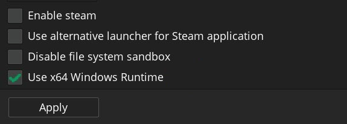
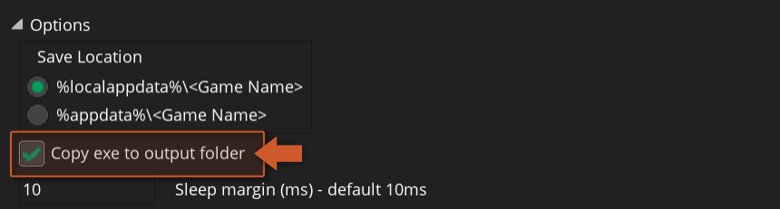
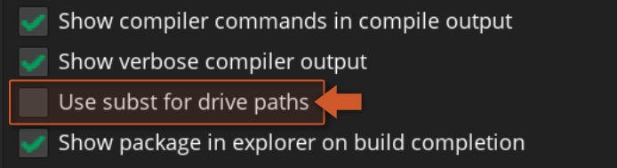
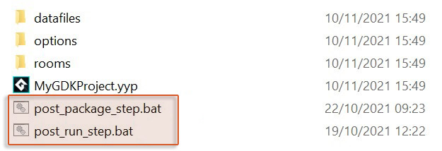
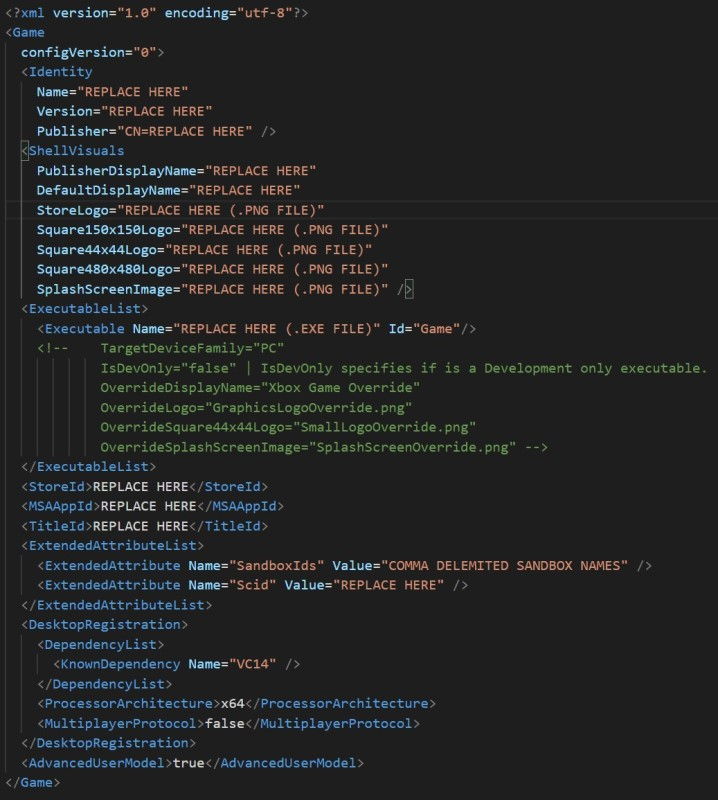
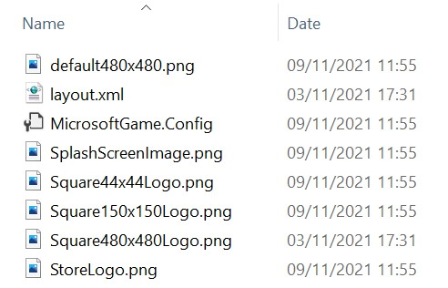
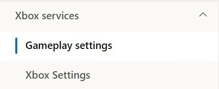
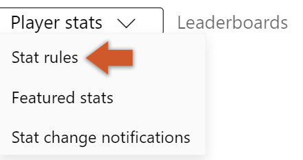
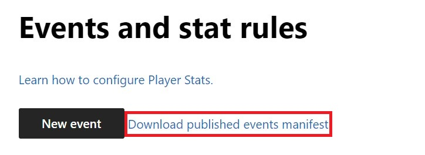

Quick Start Guide
You will initially need to set up your project for the GDK Extension to work properly. This guide covers all aspects of your project that you will need to configure.
Project Setup
In order to build your project using the extension you need to import it and make some changes to your project:
- Import the local package ( .yymps ) provided with the public release version.
- Use the 64-bit Windows runtime. To change this go into Game Options → Windows → General and enable " Use x64 Windows Runtime ".
 - Also make sure you enable the "Copy exe to output folder" setting:

These steps are required only for older versions of the GameMaker:
- For GameMaker 2022.3 (or previous) : Also make sure you disable the subst from within the Preferences → General Settings → Compiling menu, otherwise this extension will not work:

- For GameMaker 2022.2 (or previous) : The extension comes with two .bat files:
post_package_step.batandpost_run_step.bat(placed inside the extension's folder). These files need to be moved into your project's root folder, which is the same directory as your project's .yyp file:
After finishing this we'll set up the config file required for the Microsoft Store.
Sandbox Get/Set
When using Xbox Live features, you might need to change your PC sandboxes (see official documentation) so you can test those same features. For this purpose, you can run the GDK Command Line (under Start → All Apps → Microsoft GDK → Desktop VS 2018 Gaming Command Prompt) and use one of the following commands:
XblPCSandbox /get(returns the current sandbox, default is RETAIL)XblPCSandbox <sandbox>(changes the sandbox, where<sandbox>refers to your sandbox name)XblPCSandbox RETAIL(sets the sandbox back to RETAIL)
Note
Sandbox names are case sensitive.
Config File
To build and run your project using the GDK Extension, it's necessary to set up and include a MicrosoftGame.Config file:
- This config file can be created using Microsoft's MicrosoftGame Editor tool (for more information refer to its documentation page) or can be copied from the demo project and edited manually.

Note
The ExecutableList/Executable/Name property should be set to the value in GameOptions → Windows → Executable Name.
- Add the
MicrosoftGame.Configfile to the Included Files of your project. - Depending on the image file names specified in the
ShellVisualstag you will need to add those to the Included Files as well.

Upon finishing this setup and following the Project Setup section above, you should be ready to run and test your project.
Manifest File
This step is not required unless you are using the event-based functions from the Xbox Live module (this requires enabling of Event-Based Stats on the Partner Center). If you are using the event-based system from Xbox Live module you need to provide GameMaker with some extra information about the statistics, events and leaderboards created on you Partner Center's dashboard. For this you need to do the following:
- Log in to your Partner Center account, open your game's configuration page and go into the Xbox Services → Gameplay Settings where you can define your stats.

- From here you will need to select Player stats → Stat rules the drop-down menu at the top.

- On the page that opens, click on the " Download published events manifest " button.

- Add the downloaded file to your project's Included Files (/datafiles) folder.
After setting up this manifest file, you will be able to use event-based stats and leaderboards in your project.
If you make any changes to your events on the Partner Center dashboard, you'll need to republish those changes and download a new manifest file.
Shell Localization Guide
This feature allows you to define the title's Shell presence. For example, Images and Names. Used during registration to surface the title in the Shell. In order to use this the user needs to make some modifications to both their MicrosoftGame.Config file and their project:
- In their
MicrosoftGame.Configfile, they need to:- Change the value of
DefaultDisplayNameinShellVisualsto"ms-resource:ApplicationDisplayName" - Change the value of
DescriptioninShellVisualsto"ms-resource:ApplicationDescription" - Add a section which declares which languages they want to support using standard language\region codes (this should be in the
Gamesection), i.e.:
- Change the value of
<Resources>
<Resource Language="en-us" />
<Resource Language="en-gb" />
<Resource Language="de-de" />
</Resources>-
In their project developers need to add some folders to included files:
- In the root of included files (i.e.:
datafiles) they should add aGDKExtensionStringsfolder - Inside the
GDKExtensionStringsfolder they should add one for each supported language, i.e.en-usfor American English andde-defor German, so for the above list of languages the directory structure would be:
GDKExtensionStrings\en-us GDKExtensionStrings\en-gb GDKExtensionStrings\de-de- Inside the base
GDKExtensionStringsfolder they should add an XML file namedresources.reswwhich will contains the fallback language info and should look like the following (where the values should be replaced with the required defaults):
<?xml version="1.0" encoding="utf-8"?> <root> <data name="ApplicationDescription"> <value>Default App Description Here</value> </data> <data name="ApplicationDisplayName"> <value>Default Display Name Here</value> </data> </root>- Inside each of the language-specific folders they should add another
resources.reswfile with the appropriate values for that language.
- In the root of included files (i.e.: